Conceito
As medidas de posição (média, mediana, moda...) descrevem apenas uma das características dos valores numéricos de um conjunto de observações, o da tendência central. Porém, nenhuma delas informa sobre o grau de variação ou dispersão dos valores observados. Em qualquer grupo de dados os valores numéricos não são semelhantes e apresentam desvios variáveis em relação a tendência geral de média. As medidas de dispersão servem para avaliar o quanto os dados são semelhantes, descreve então o quanto os dados distam do valor central. Desse jeito, as medidas de dispersão servem também para avaliar qual o grau de representação da média.
È fácil demonstrar que apenas a média é insuficiente para descrever um grupo de dados. Dois grupos podem ter a mesma média, mas serem muito diferentes na amplitude de variação de seus dados. Por exemplo:
A média dos três grupos é a mesma (5), mas no grupo “A” não há variação entre os dados, enquanto no grupo “B” a variação é menor que no grupo “C”. Dessa forma, uma maneira mais completa de apresentar os dados (além de aplicar uma medida de tendência central como a média) é aplicar uma medida de dispersão. As principais medidas de dispersão são:
O que é Amplitude Total?
A amplitude total de um conjunto de dados é a diferença entre o maior e o menor valor observado. A medida de dispersão não levar em consideração os valores intermediários perdendo a informação de como os dados estão distribuídos e/ou concentrados.
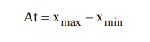- Calculamos a amplitude total como:
- 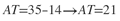 .
- Podemos perceber que a amplitude total considera apenas o valor máximo e o valor mínimo, não importando todos os demais valores do conjunto de dados. Esta condição tem o inconveniente de expor a medida de amplitude total à presença de valores extremos ou atípicos, chamados outliers, o que quase sempre invalida a idoneidade do resultado (CRESPO, 2009). Assim, devemos aperfeiçoar a descrição da variabilidade dos dados através de outras medidas de dispersão, como a variância ou o desvio padrão.
Amplitude Interquartílica
A amplitude interquartílica é a diferença entre o terceiro e o primeiro quartil. Esta medida é mais estável que a amplitude total por não considerar os valores mais extremos. Esta medida abrange 50% dos dados e é útil para detectar valores discrepantes.
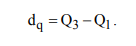Por outro lado, a amplitude semi-interquartílica é definida como a média aritmética da diferença entre a mediana e os quartis:
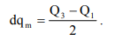Exemplo: A amplitude interquartílica da idade dos alunos que cursam a disciplina Inferência
Estatística do curso de Estatística da UEM considerando-se a Tabela 10 é:
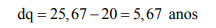A amplitude entre o terceiro e primeiro quartil, que envolve 50% (centrais) dos alunos, é de 5,67 anos.
Exemplo: Do exemplo 17, obtém-se a amplitude semi-interquartílica da idade dos alunos que cursam a disciplina Inferência Estatística do curso de Estatística da UEM:
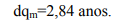Observa-se que a distância entre a mediana e o quartil 1 (22-20) é 2. Como 2 < 2,84, isto indica que há uma concentração de dados à esquerda da mediana., e que os dados localizados a direita da mediana são mais dispersos.
A Desvio Medio
O desvio médio de um conjunto de dados é a média do total de todos os desvios do ponto de destaque de um conjunto. É um instrumento estatístico para avaliar o intervalo a partir de uma média ou mediana. A média é o valor médio de todas as figuras em um conjunto de dados. A mediana é o número que fica no meio ao organizar conjuntos de dados do menor para o maior número. O desvio também pode ser um desvio médio absoluto ou desvio médio. Sempre que estiver operando com conjuntos de dados mínimos, você poderá encontrar o desvio manualmente. Para encontrá-lo para conjuntos de dados substanciais, você pode usar um software exclusivo que executa o cálculo depois de inserir os dados.
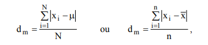para dados populacionais ou amostrais, respectivamente. Caso os dados estejam apresentados segundo uma distribuição de freqüência, tem-se:
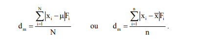2.Depois de encontrar a média, você pode encontrar o desvio da média de cada valor em um conjunto de dados. Encontre o contraste entre a média calculada anteriormente e os valores em cada conjunto de dados e anote o valor absoluto dos números ocorridos. O valor absoluto é o seu módulo ou valor não negativo. A direção de cada desvio é insignificante ao encontrar o desvio médio, então todos os números são positivos.
3.Depois de encontrar o desvio da média para cada conjunto de valores, você deve resumi-los. Todos os valores são positivos porque esta é uma operação de valor numérico. Confirme se os números neste conjunto são positivos antes de passar para a próxima etapa.
4.Para encontrá-lo, divida o agregado calculado anteriormente de todos os desvios pelo número total de desvios que você adicionou. Certifique-se de ter o número correto para cada desvio para que esta etapa seja calculada corretamente.
23+30+31+15+46=145 *
* 145/5 = 29 *
Como você conseguiu deduzir que o jogador alcançou uma média de 29 pontos para cada jogo, o próximo passo é encontrar o desvio da média de cada jogo.
23-29=6 *
* 30-29=1 *
* 31-29=2 *
* 15-29 = 14 *
46-29=17
Depois, encontre o agregado de todas as variações.
6+1+2+14+17=40 *
O desvio médio é o agregado de todos os desvios dividido pelo número absoluto de entradas.
Desvio médio=40/5=8 *
O desvio médio da média referente aos pontos conquistados nos cinco primeiros torneios da temporada é de oito
Variância e Desvio Padrão
Variância e desvio padrão são medidas de dispersão, ou seja,
parâmetros utilizados na Estatística para calcular o quanto
os dados de um conjunto de valores podem variar.
A variância (V) é útil para determinar o afastamento da média que
os dados de um conjunto analisado apresentam. Para isso, determina-se
o valor médio das diferenças quadradas da média.
O desvio padrão (DP) é calculado a partir da variância,
pois é a raiz quadrada desse parâmetro.
Fórmulas de variância e desvio padrão
Para calcular a variância de todos os valores de um conjunto de dados
utiliza-se a fórmula:
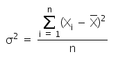Onde,
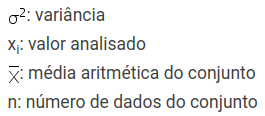Essa fórmula representa a variância populacional e para encontrá-la:
Primeiramente, devemos calcular a média aritmética do conjunto;
Em seguida, subtraímos de cada valor do conjunto a média calculada e elevamos
o resultado ao quadrado;
Por fim, somamos todos os valores e dividimos pelo número de dados.
Quando o conjunto de dados é muito grande e queremos utilizar uma amostra
aleatória devemos empregar a fórmula de variância amostral:
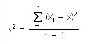Como o desvio padrão é expresso pela raiz quadrada da variância, basta que seja extraída
a raiz do resultado calculado pela fórmula anterior.
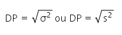Portanto, o desvio padrão é um dado que apresenta a mesma unidade do conjunto de números na amostra,
o que é útil para a análise e comparação.
Coeficiente de Variação
O coeficiente de variação é uma medida de dispersão relativa definida como a razão entre o
desvio padrão e a média:
se os dados são populacionais ou amostrais.
A partir do coeficiente de variação pode-se avaliar a homogeneidade do conjunto de dados e, conseqüentemente, se a média é uma boa medida para representar estes dados. É utilizado, também, para comparar conjuntos com unidades de medidas distintas. Uma desvantagem do coeficiente de variação é que ele deixa de ser útil quando a média está próxima de zero. Uma média muito próxima de zero pode inflacionar o CV. Um coeficiente de variação superior a 50% sugere alta dispersão o que indica heterogeneidade dos dados. Quanto maior for este valor, menos representativa será a média. Neste caso, opta-se pela mediana ou moda, não existindo uma regra prática para a escolha de uma destas medidas. O pesquisador, com sua experiência, é que deverá decidir por uma ou outra. Por outro lado, quanto mais próximo de zero, mais homogêneo é o conjunto de dados e mais representativa será sua média.
Para idades apresentadas na Tabela 10, temos:
Como CV<50%, pode-se afirmar que a média é uma medida descritiva representativa para a variável idade dos alunos da disciplina Inferência Estatística do curso de Estatística da Universidade Estadual de Maringá do ano de 2002.
Medidas de assimetria
Medida de assimetria é um indicador da forma da distribuição dos dados. Ao construir ma distribuição de freqüências e/ou um histograma, está-se buscando, também, identificarvisualmente, a forma da distribuição dos dados que é ou não confirmada pelo coeficiente de assimetria de Pearson (As) definido como:
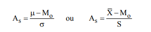Para dados populacionais e amostrais, respectivamente.
Uma distribuição é classificada como:
Exemplo A distribuição das idades apresentadas na Tabela 10 é classificada como assimétrica positiva, pois:

Medidas de Curtose
A curtose ou achatamento mede a concentração ou dispersão dos valores de um conjunto de valores em relação às medidas de tendência central em uma distribuição de frequências conhecida (a distribuição Normal). A distribuição apresenta uma curva de frequências mais fechada que a da distribuição Normal.
A curtose pode ser de três tipos:
A distribuição apresenta uma curva de frequências mais fechada que a da distribuição Normal.
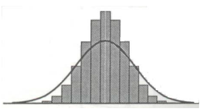A distribuição apresenta uma curva de frequências idêntica à da distribuição Normal.

A distribuição apresenta uma curva de frequências mais aberta que a da distribuição Normal.
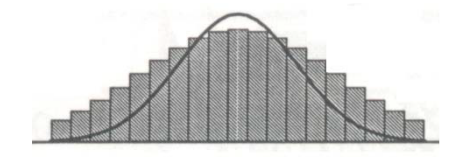As medidas de curtose podem ser calculadas através da expressão:
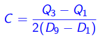
Relativamente `a curva da distribuição Normal, temos:
Se C = 0,263 a distribuição é Mesocúrtica;
Se C < 0,263 a distribuição é Leptocúrtica;
Se C > 0,263 a distribuição é Platicúrtica;